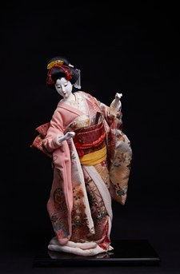

Mai (Vũ điệu ) là dòng búp bê nghệ thuật tái hiện hình ảnh các vũ công trong những điệu múa truyền thống Nhật Bản, đặc biệt là Kabuki, Nihon Buyō và các điệu múa cung đình. Nhiều tác phẩm được lấy cảm hứng từ các vở múa kinh điển như Fuji Musume (藤娘 – Thiếu nữ hoa tử đằng) hay Kyoganoko Musume Doujouji (京鹿子娘道成寺 – Thiếu nữ chùa Doujouji). Mỗi búp bê được chế tác tinh xảo nhằm ghi lại một khoảnh khắc đẹp của người nghệ sĩ khi biểu diễn.
Trang phục của búp bê được may theo kiểu kimono truyền thống, kết hợp cùng quạt, ô, nón hoặc các đạo cụ sân khấu khác. Từng cử chỉ, ánh mắt và dáng đứng đều được thể hiện sống động, phản ánh vẻ đẹp thanh lịch và tinh thần của nghệ thuật múa Nhật Bản.
Những búp bê này thường được trưng bày trong gia đình hoặc dùng làm quà tặng trong các dịp lễ truyền thống (Sekku) và mừng tân gia, với ý nghĩa cầu chúc may mắn, hạnh phúc và gìn giữ các giá trị văn hóa truyền thống.
舞は、日本の伝統舞踊、特に歌舞伎、日本舞踊、宮廷の舞などの踊り手の姿を表現した美術人形のシリーズです。『藤娘』や『京鹿子娘道成寺』といった古典の名作舞踊から着想を得た作品も多く、一体一体が、演者の舞う美しい一瞬をとらえるよう精巧に作られています。
人形の衣装は伝統的な着物仕立てで、扇、傘、笠などの舞台小道具と組み合わされています。しぐさ、まなざし、立ち姿の一つひとつが生き生きと表現され、日本舞踊の優雅な美しさと精神を映し出しています。
これらの人形は家庭に飾られたり、節句や新築祝いなどの贈り物として用いられたりしてきました。幸運や幸福を願い、伝統文化の価値を受け継ぐという意味が込められています。